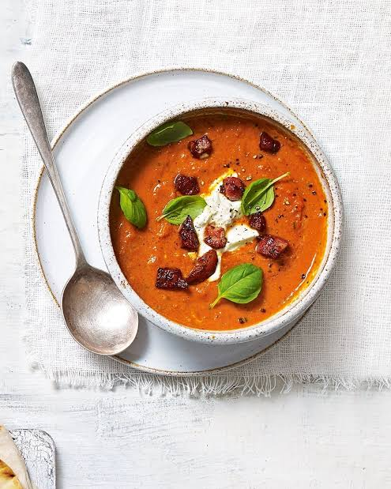

Home
Rajčatová polévka se slaninou

Description
Hladká rajčatová polévka, která se po uvaření rozmixuje do jemné krémové konzistence. Křupavá opečená slanina navrch dodá slanou chuť a kontrast. Hodí se k ní čerstvé pečivo nebo opečený chléb.
Ingredients
- 1 plechovka (400 g) loupaných rajčat
- 1 menší cibule
- 2 stroužky česneku
- 300 ml vývaru (zeleninového nebo kuřecího)
- 100 g slaniny
- sůl, pepř, špetka cukru
- bazalka, smetana.. podle chuti
Steps
- Slaninu nakrájej na kostičky a opékej v hrnci na středním ohni do křupava. Pak ji vyndej na talíř a v hrnci nech trochu vypečeného tuku.
- Do stejného hrnce přidej nakrájenou cibuli a česnek a restuj asi 5 minut, dokud nezměknou.
- Přidej rajčata a vývar, osol, opepři a přidej špetku cukru. Vař na mírném ohni asi 15 minut.
- Sundej z ohně a polévku rozmixuj dohladka. Nejlepší je tyčový mixér přímo v hrnci. Pokud mixuješ v klasickém mixéru, dělej to po částech a víko nech lehce pootevřené, aby unikala pára.
- Nalij polévku do misek, posyp křupavou slaninou a podle chuti přidej bazalku nebo trochu smetany.
Dobrou chuť!